<title>Mould Looks Review</title>
<meta name="claude:viewport-fit-sides" content="cover">
<link rel="stylesheet" href="https://fonts.googleapis.com/css2?family=IBM+Plex+Mono:wght@400;500&family=IBM+Plex+Sans:wght@400;500;600&family=Space+Grotesk:wght@500;600&display=swap">
<style>
/* One reading column; paired pictures two-up with their counts under them. */
:root {
  --bg: #eef2f0; --panel: #ffffff; --ink: #17222a; --dim: #55646c; --line: #cdd7d6;
  --amber: #a86a00; --amber-soft: #f6e7c4; --rim: #2b6f86; --good: #2f6b3c; --bad: #a3402d;
  --display: "Space Grotesk", "IBM Plex Sans", system-ui, sans-serif;
  --body: "IBM Plex Sans", system-ui, -apple-system, "Segoe UI", sans-serif;
  --mono: "IBM Plex Mono", ui-monospace, "SF Mono", Menlo, monospace;
}
@media (prefers-color-scheme: dark) {
  :root:not([data-theme="light"]) {
    --bg: #0a1015; --panel: #111a21; --ink: #e6ecea; --dim: #96a5aa; --line: #24323b;
    --amber: #f0a92b; --amber-soft: #2c2412; --rim: #5fa9c2; --good: #7fc48d; --bad: #ee8a73;
    color-scheme: dark;
  }
}
:root[data-theme="dark"] {
  --bg: #0a1015; --panel: #111a21; --ink: #e6ecea; --dim: #96a5aa; --line: #24323b;
  --amber: #f0a92b; --amber-soft: #2c2412; --rim: #5fa9c2; --good: #7fc48d; --bad: #ee8a73;
  color-scheme: dark;
}
body { background: var(--bg); color: var(--ink); font-family: var(--body); font-size: 16px; line-height: 1.55;
  padding-left: max(16px, env(safe-area-inset-left, 0px)); padding-right: max(16px, env(safe-area-inset-right, 0px)); padding-block: 28px 64px; margin: 0; }
main { max-width: 760px; margin: 0 auto; display: flex; flex-direction: column; gap: 20px; }
h1, h2 { font-family: var(--display); text-wrap: balance; line-height: 1.2; margin: 0; }
h1 { font-size: 2rem; font-weight: 600; }
h2 { font-size: 1.35rem; font-weight: 600; margin-top: 24px; padding-top: 18px; border-top: 2px solid var(--rim); }
p { margin: 0; }
a { color: var(--rim); }
.kicker { font-family: var(--mono); font-size: 0.78rem; letter-spacing: 0.08em; text-transform: uppercase; color: var(--dim); }
.lede { font-size: 1.1rem; }
.answer { background: var(--panel); border: 1px solid var(--line); border-left: 4px solid var(--amber); padding: 16px 18px; display: flex; flex-direction: column; gap: 10px; }
.answer ol, ul { margin: 0; padding-left: 1.3em; display: flex; flex-direction: column; gap: 6px; }
.figs { display: grid; grid-template-columns: repeat(2, minmax(0, 1fr)); gap: 14px; }
.figs.one { grid-template-columns: minmax(0, 1fr); }
@media (max-width: 620px) { .figs { grid-template-columns: minmax(0, 1fr); } }
figure { margin: 0; display: flex; flex-direction: column; gap: 6px; min-width: 0; }
figure img { width: 100%; height: auto; display: block; border: 1px solid var(--line); background: #06090c; }
figcaption { font-size: 0.9rem; color: var(--dim); }
.count { font-family: var(--mono); font-size: 0.8rem; color: var(--ink); background: var(--amber-soft); padding: 3px 7px; display: inline-block; font-variant-numeric: tabular-nums; }
.verdict { font-family: var(--mono); font-size: 0.75rem; letter-spacing: 0.06em; text-transform: uppercase; padding: 2px 8px; border: 1px solid currentColor; display: inline-block; }
.keep { color: var(--good); } .fix { color: var(--bad); } .ask { color: var(--amber); }
.scroll { overflow-x: auto; }
table { border-collapse: collapse; width: 100%; font-size: 0.92rem; }
th, td { text-align: left; vertical-align: top; padding: 8px 10px; border-bottom: 1px solid var(--line); }
th { font-family: var(--mono); font-size: 0.75rem; letter-spacing: 0.06em; text-transform: uppercase; color: var(--dim); font-weight: 500; }
td.num { font-family: var(--mono); font-variant-numeric: tabular-nums; white-space: nowrap; }
.note { font-size: 0.93rem; color: var(--dim); }
</style>
<main>
  <div class="kicker">Mould game · independent review of the looks pass · 2026-11-10</div>
  <h1>Is the new look better?</h1>
  <p class="lede">Partly. The smoothing is a clear win: the dish rim, the salt and the inside of the tubes no longer show 4-pixel blocks. Three of the other changes make the dish harder to read, and one barely changes anything.</p>

  <div class="answer">
    <b>What I'd do before this ships switched on</b>
    <ol>
      <li><b>Keep the smoothing.</b> Fix one leftover: where a tube touches the rim, the edge is still a staircase.</li>
      <li><b>Bring back a clear starving colour.</b> With the new colours, a mould that has stopped eating stays orange for up to 6 seconds, then turns dark rust. The old grey showed it in half a second, and it stood out. In the keep-it-alive dish, hunger is the whole game.</li>
      <li><b>Make the stain much fainter, or turn it off.</b> At 22.5° it browns about 30% of the empty dark agar by 60 to 90 seconds, so the dish looks like dirty glass.</li>
      <li><b>Mould with food flowing turns muddy brown all over.</b> The grey smears are gone, but the network now reads as dull amber.</li>
      <li><b>The lamp still looks like a grey puddle, not light.</b></li>
      <li><b>Walker specks: your call, by eye, in motion.</b> In stills they look like pepper.</li>
    </ol>
  </div>
  <p class="note">All pictures were drawn by me from the branch (head cbd13d8): the same dish at the same moment, drawn two ways. Nothing in the simulation differs between a pair. The window always draws at 4 pixels a cell, as here.</p>

  <h2>Whole dish, 22.5°, 60 s: before and after</h2>
  <div class="figs">
    <figure>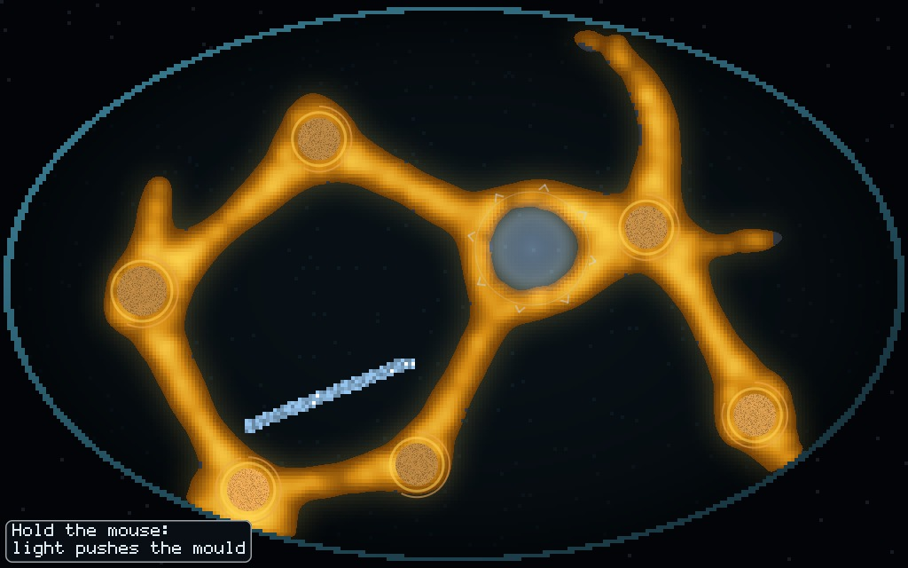<figcaption>Before. <span class="count">1,772 walkers · 7,063 tube cells</span></figcaption></figure>
    <figure>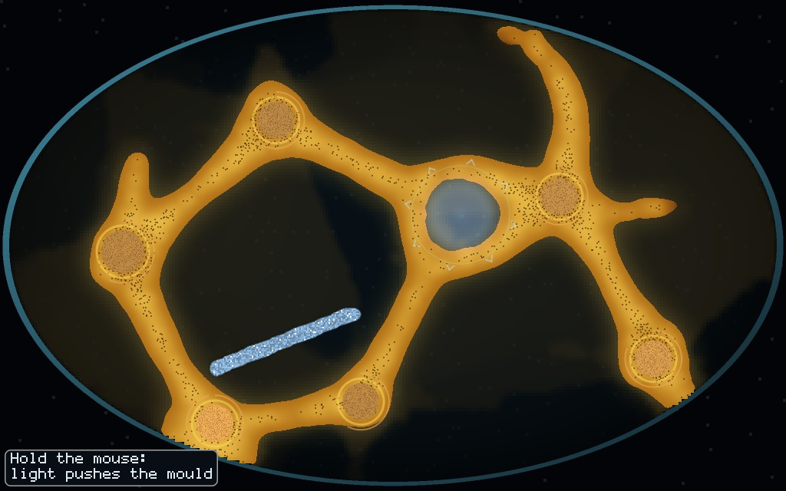<figcaption>After, every new switch on. Same counts.</figcaption></figure>
  </div>
  <p>The smooth rim and salt line are better at a glance. The tubes lose their bright core and read flatter, and dark specks sit along their middles. A brown haze covers the upper half of the agar.</p>

  <h2><span class="verdict keep">keep</span> Smoothing, with one leftover</h2>
  <div class="figs one">
    <figure>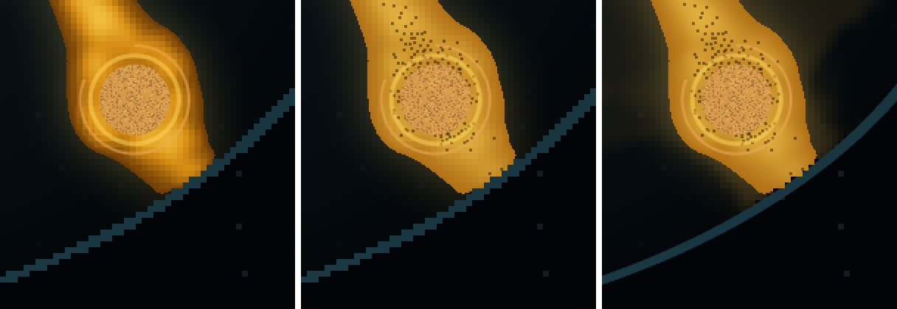<figcaption>Left: before. Middle: new colours, no smoothing. Right: everything on. The rim is now a clean curve, but where the tube meets it (right panel, lower right of the tube) the tube's edge is still cut in 4-pixel steps, which shows more now that the rim beside it is smooth.</figcaption></figure>
  </div>
  <p class="note">Cause: cells that have tube on them skip the smooth-rim path, so the rim is drawn per pixel everywhere except under mould.</p>

  <h2><span class="verdict fix">fix</span> The starving warning got slower and quieter</h2>
  <div class="figs one">
    <figure>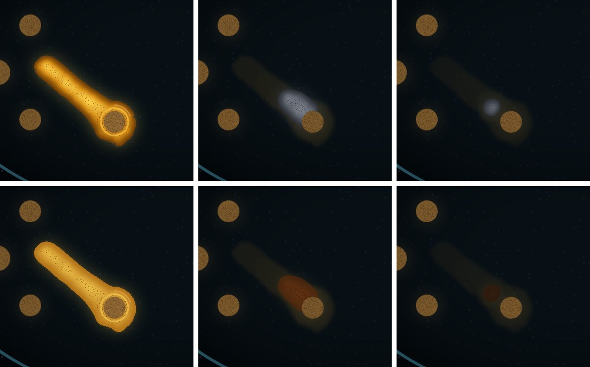<figcaption>Keep It Alive, doing nothing, seed 1. Top: the old grey look. Bottom: the new food colours. Columns at 50, 62 and 74 s. <span class="count">tube cells not fed in the last half second: 19 of 822 · 376 of 376 · 94 of 94</span> <span class="count">walkers 300 · 130 · 11 · dead at 1:18</span></figcaption></figure>
  </div>
  <p>At 62 s every tube cell has stopped eating. The grey look says so: pale and sick against the dark. The new look shows a dim rust blob, close to the colour of an empty food pile and of the stain. At 60 s, when every cell was already unfed, the new look still drew this tube bright orange. That comes from how it is built: the new colour fades over 6 seconds of hunger, while the old grey switched after half a second.</p>
  <p><b>Suggestion:</b> keep the gold-to-white ramp for how much food a fed tube holds. Let hungry tube leave the warm colours on the old half-second clock and go to the cold grey, so hunger never looks like a duller shade of fed.</p>

  <h2><span class="verdict fix">fix</span> The stain browns a third of the dish</h2>
  <div class="figs">
    <figure>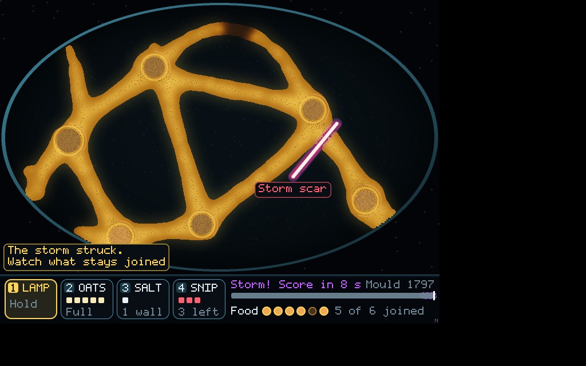<figcaption>Stain off. 22.5°, free dish, doing nothing, 90 s (drawn every frame, as the window does).</figcaption></figure>
    <figure>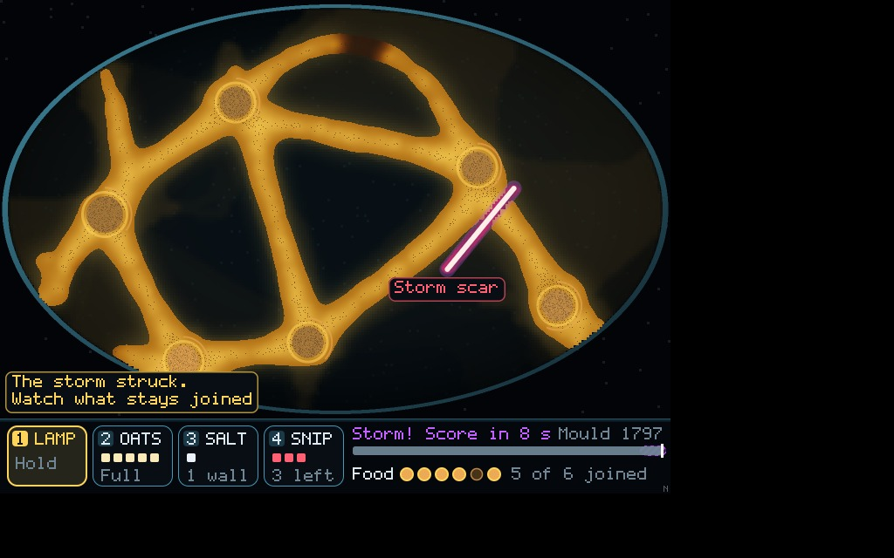<figcaption>Stain on. <span class="count">dark agar pixels visibly changed: 31% at 60 s · 29% at 90 s</span></figcaption></figure>
  </div>
  <p>The lively mould sweeps a lot of the dish, so the stain is everywhere instead of marking a few old paths. It lowers the contrast between the mould and the agar, which is the main readout.</p>
  <p><b>Suggestion:</b> build the stain up only where tube stood for a while, so a trunk leaves a mark and a passing feeler leaves none. Make it fainter, or ship it off until it looks good.</p>
  <p class="note">Honesty: the stain is a record of where real tube was, but the drawing code keeps it, not the dish, and the mould never feels it. Real slime mould does avoid its own old slime (Reid et al. 2012). Moving the stain into the dish, where walkers shy from it a little, would make it real and would be the "marks that stay" idea from the first review. That is a change to how the mould behaves, so it belongs with the mould thread. Keeping it in the drawing also makes pictures depend on how often you draw: a single-frame render shows no stain at all.</p>

  <h2><span class="verdict fix">fix</span> Food flowing: the grey smears became brown mud</h2>
  <div class="figs">
    <figure>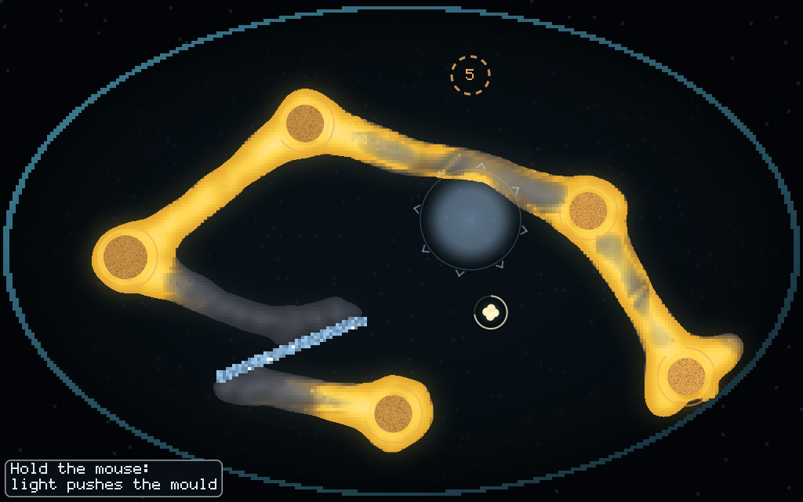<figcaption>Before, food flow on, 45°, seed 2, 50 s.</figcaption></figure>
    <figure>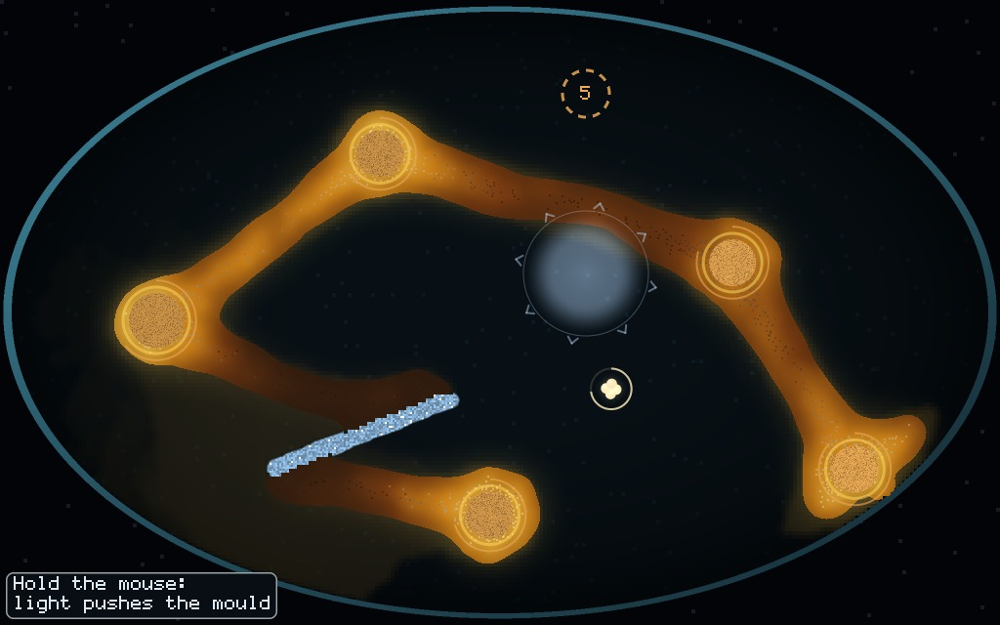<figcaption>After. <span class="count">food level on tube: p10 0.07 · p50 0.57 · p90 0.86 · 1,310 walkers</span></figcaption></figure>
  </div>
  <p>The ramp is used end to end now, which is what it was rescaled for. But with a tenth of the tube near the bottom and the bottom stops dark brown, the network as a whole reads dull. Lifting the bottom of the ramp, so that "little food" is dim gold and only "none" goes cold, would keep the gradient and the glow.</p>

  <h2><span class="verdict fix">fix</span> The lamp still reads as a puddle</h2>
  <div class="figs one">
    <figure>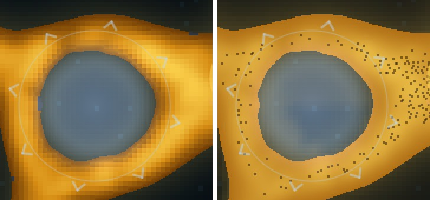<figcaption>Left: before. Right: after. The hard bright ring is now faint, and the pool's edge now matches where the simulation's light ends (I checked it against the light code). But the middle is still a flat slate-grey disc.</figcaption></figure>
  </div>
  <p>The lamp pushes the walkers out, so its light falls on bare dark agar. A pale blue added to near-black comes out grey. To read as light it should make what it lands on brighter and warmer: lit agar looking pale and see-through, and a glow on the tube at the pool's edge.</p>

  <h2><span class="verdict ask">your eye</span> Walker specks</h2>
  <div class="figs">
    <figure>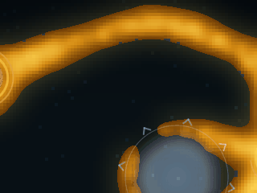<figcaption>Before, 3 s at real speed.</figcaption></figure>
    <figure>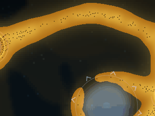<figcaption>After, specks on (grains). <span class="count">1,614 to 1,772 walkers drawn, one speck each</span></figcaption></figure>
  </div>
  <p>Every speck is a real walker, so it is honest. In stills the specks look like pepper on the tube. They also show something true: the walkers run in a lane 3 to 4 cells wide down the middle of a tube about 12 cells wide. Each one jumps 2 cells (8 pixels) every frame, so in the window it may read as shimmer more than as streaming. You said "look good" matters more than "look alive", so I'd lean toward off or much fainter unless the clip wins you over. (These clips are GIFs, which band the dark colours. The window does not.)</p>

  <h2>Smaller points</h2>
  <ul>
    <li><b>Narrow tool bar:</b> harmless, but the window always draws the frame 1,024 pixels wide, so it never switches on in the game. The overlap I reported in my first review came from my own small test renders. That one was my mistake.</li>
    <li><b>Cost</b> (drawing only, scale 4, 91 frames, run alone): 22.5° 5.01 → 7.86 ms (+2.85); 45° 3.83 → 5.95 ms (+2.12). That matches the thread's own +2.35 to +2.66 within noise. The frame budget is 16.7 ms, and the simulation takes 1.4 to 3.3 ms of it. Worst frame not measured. The food field and stain are rebuilt every frame even when paused, and the glow works out each cell's food twice. That is easy to trim if needed.</li>
    <li><b>Checked and fine:</b> the rim picture is cached per look, alarm flash and scale, and nothing else changes it; the stain resets on a restart, a new dish and a new Wanderer stretch; specks stay inside the dish; tool clicks use the same tile sizes as the drawing.</li>
  </ul>
</main>
